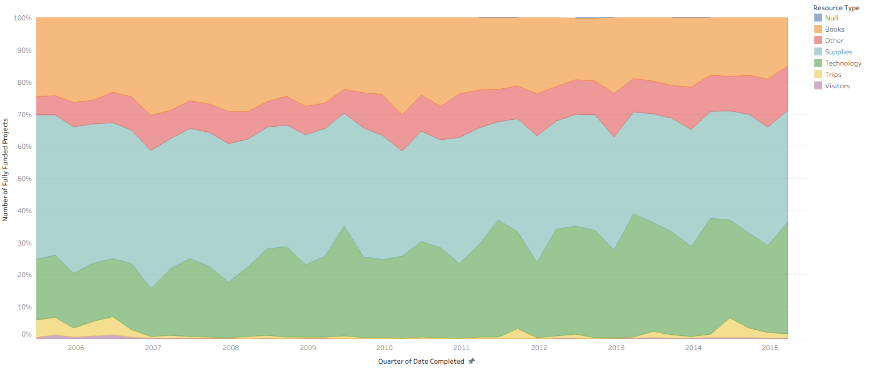
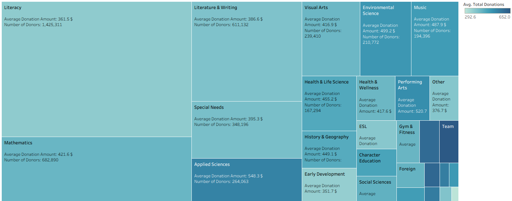

Projects / Which classroom projects get funded on a school crowdfunding site
Which classroom projects get funded on a school crowdfunding site
Course project, Michigan Ross MBA. Tableau views of 1.2 million public DonorsChoose project records. Not client or employer work.
| Situation | Teachers post classroom projects on a crowdfunding site, and donors choose which projects to fund. 1.2 million projects were posted from 2002 to 2016. |
|---|---|
| Complication | About 3 of 10 projects do not reach their goal. Teachers do not know which of their choices change the chance. |
| Question | Which projects get funded, and what can a teacher control? |
| Answer | 70% of projects reach their goal. Price matters most: 90% of projects below $200 are funded, and 45% of projects above $1,500. |
Projects that reach their goal
70%
of 1,130,701 closed projects, 2002 to 2016
Funded below $200
90%
45% for projects of $1,500 to $2,500
Median project
$428
4 donors for the median funded project; $501M donated in total
The price of a project decides most: each $200 more cuts the chance of funding
Share of closed projects (funded or expired) that reached their goal, by price of the project without optional support.
Technology grew from 18% to 31% of funded projects, and books fell from 25% to 17%

Literacy has 28% of all donors, but small subjects such as team sports raise more for each project

The analysis
Question
Which classroom projects do donors fund, and what does a teacher control?
Data
1,203,287 public project records from a crowdfunding site for schools: price, resource, subject, poverty level, status.
Method
Tableau views of funding by resource type, subject and place, and funding rates by price band.
- Technology projects have the lowest funding rate (63%) and the highest median price ($557). Books have the highest rate (77%) at $374.
- Schools with the highest poverty level are funded more often (73%) than all other schools (67% to 68%).
- For a teacher, the practical lever is the size of the request: two projects of $400 have a better chance than one of $800.
- The funding rate stayed near 70% from 2010 to 2016 while the number of projects more than doubled.